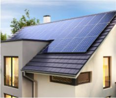
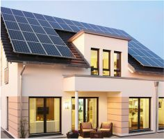
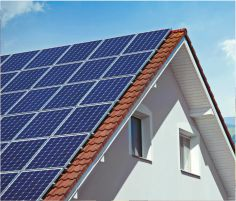

<section class="advantages">
  <div class="container">
    <h2 class="section-title advantages__title">Зеленый тариф</h2>
    <div class="advantages__container">
      <div class="advantages__left-content">
        <ul class="advantages__tabs-header advantages-tabs-header">
          <li class="advantages-tabs-header__item advantages-tabs-header__item--active">продажа</li>
          <li class="advantages-tabs-header__item">закрепление</li>
          <li class="advantages-tabs-header__item">ограничения</li>
        </ul>
        <div class="advantages__left-content-body">

          <ul class="advantages-tabs-body">
            <li class="advantages-tabs-body__item advantages-tabs-body__item--active">
              
            <ul class="advantages-tabs-body__text slider">
                <li class="slider__item">Цена, по которой домохозяйства могут продать электроэнергию, более чем в 10 раз превышает цену, по которой они ее покупают для своих нужд — 0,16 Евро/кВт (продажа).</li>
                <li class="slider__item">Объем выдачи электроэнергии в сеть не сможет превышать 15 кВт. Этого более чем достаточно. Микрогенерация должна обеспечить энергией частный дом, едва ли ее излишки превысят 15кВт.</li>
                <li class="slider__item">Порядок выплат за переданную в сеть электроэнергию будет также упрощен. Расчет будет происходить в конце каждого месяца, как и обычные расчеты граждан с поставщиками электроэнергии</li>
                <li class="slider-nav">
                  
                  
                </li>
            </ul>
          </li>
            <li class="advantages-tabs-body__item">
              
            <ul class="advantages-tabs-body__text slider-two">
              <li class="slider-two__item">Цена, по которой домохозяйства могут продать электроэнергию, более чем в 10 раз превышает цену, по которой они ее покупают для своих нужд — 0,16 Евро/кВт (продажа).</li>
              <li class="slider-two__item">Объем выдачи электроэнергии в сеть не сможет превышать 15 кВт. Этого более чем достаточно. Микрогенерация должна обеспечить энергией частный дом, едва ли ее излишки превысят 15кВт.</li>
              <li class="slider-two__item">Порядок выплат за переданную в сеть электроэнергию будет также упрощен. Расчет будет происходить в конце каждого месяца, как и обычные расчеты граждан с поставщиками электроэнергии</li>
              <li class="slider-two-nav">
                
                
              </li>
            </ul>
          </li>
            <li class="advantages-tabs-body__item">
              
            <ul class="advantages-tabs-body__text slider-three">
              <li class="slider-three__item">Цена, по которой домохозяйства могут продать электроэнергию, более чем в 10 раз превышает цену, по которой они ее покупают для своих нужд — 0,16 Евро/кВт (продажа).</li>
              <li class="slider-three__item">Объем выдачи электроэнергии в сеть не сможет превышать 15 кВт. Этого более чем достаточно. Микрогенерация должна обеспечить энергией частный дом, едва ли ее излишки превысят 15кВт.</li>
              <li class="slider-three__item">Порядок выплат за переданную в сеть электроэнергию будет также упрощен. Расчет будет происходить в конце каждого месяца, как и обычные расчеты граждан с поставщиками электроэнергии</li>
              <li class="slider-three-nav">
                
                
              </li>
            </ul>
          </li>
          </ul>
          <ul class="advantages__items advantages-items">
            <li class="advantages__item advantages-item">
              <h3 class="advantages-item__title">Гарантия выкупа</h3>
              <p class="advantages-item__descr">Гарантированный выкуп электроэнергии государством - прописано в НКРЕ №447</p>
            </li>
            <li class="advantages__item advantages-item"><h3 class="advantages-item__title">Долгосрочно
              </h3>
              <p class="advantages-item__descr">это проект, поддерживаемый международными инвестиционными организациями</p>
            </li>
            <li class="advantages__item advantages-item"><h3 class="advantages-item__title">Вид вложения</h3>
              <p class="advantages-item__descr">Альтернатива банковским депозитам, окупаемость - от 16% до 18% годовых</p>
            </li>
            <li class="advantages__item advantages-item"><h3 class="advantages-item__title">Высокая ставка</h3>
              <p class="advantages-item__descr">Самая высокая тарифная ставка в европе - 0,16 евро</p>
            </li>
          </ul>
        </div>
      </div>
      <div class="advantages__right-content advantages-right-content">
        <h3 class="advantages-right-content__subtitle">«Зеленый тариф» — это особые тарифные условия, которые позволяют частным домохозяйствам   не только потреблять, но и продавать выработанное домашними солнечными электростанциями электричество в электросеть общего пользования.</h3>
        
      </div>
    </div>
  </div>
</section>
